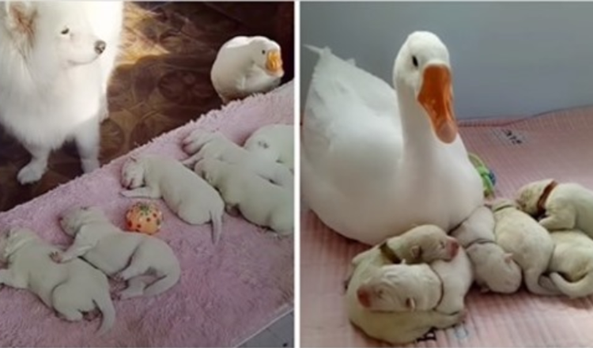

Wonderful Goose Becomes The Proud Nanny Of Her Bestie’s Puppies

Interspecies friendships are always among one of the most unbelievable yet amazing things that happen to this world.
In fact, animals don’t see any type of difference the method humans do. All they see is simply a being standing before them, treating them sincerely, loving them unconditionally. And that’s what real friends are for.
The dog and the goose in this tale are a fantastic example, their unique friendship will heat up your heart for certain. The goose was rescued by the dog’s owner when she was just a small baby, but the size doesn’t stop the Samoyed from falling in love with her two-legged friend. Their bond bloomed right at that moment and just gets stronger with time.
As time passes, the not likely duo continues to grow up side by side. The floof always maintains her eyes on the gosling, and the gosling likes to socialize with her furry companion also. They eat, sleep, play together, they do all the important things human best friends would enjoy to do! The two are so close that in some cases it looks like they forget there is still a poodle in the house.